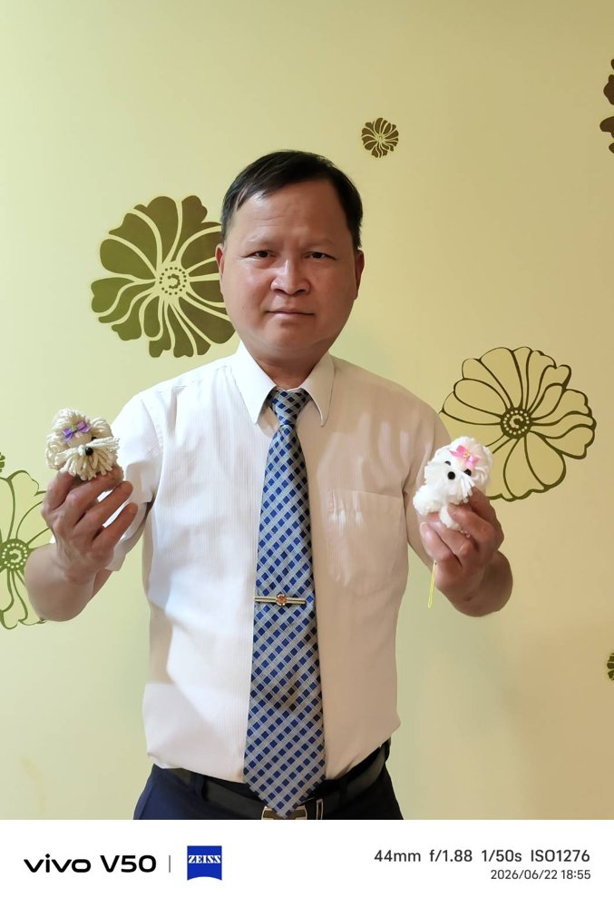
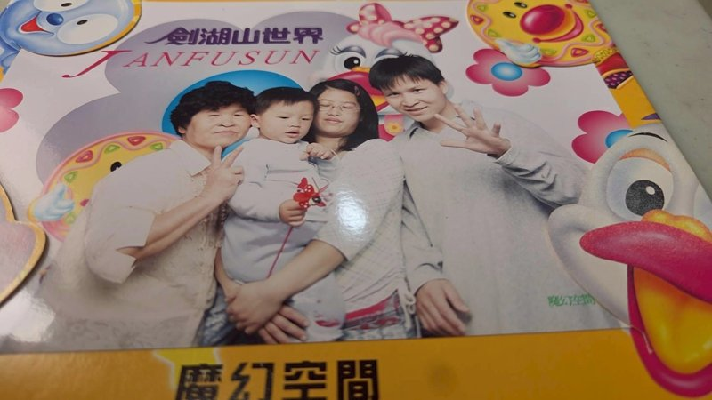
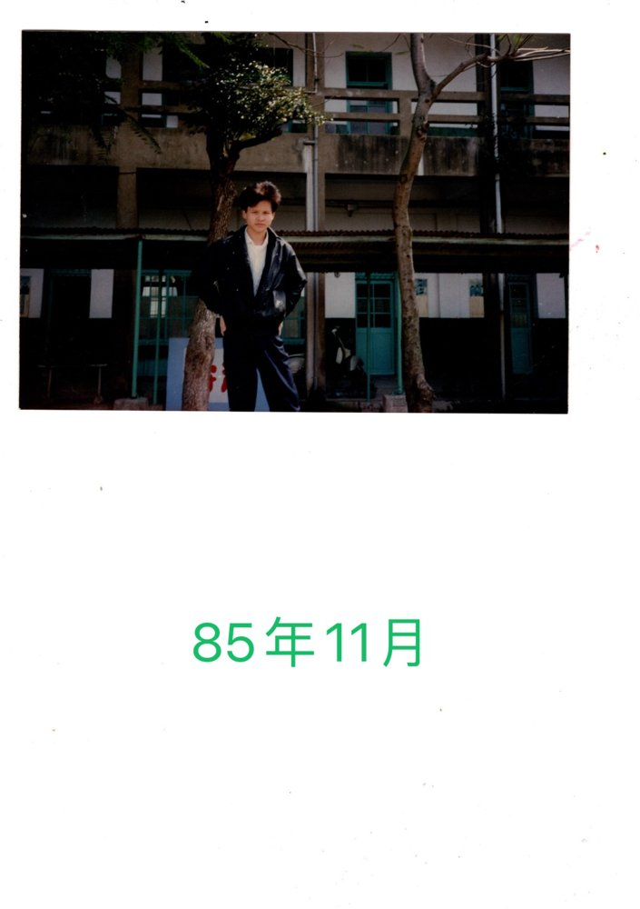
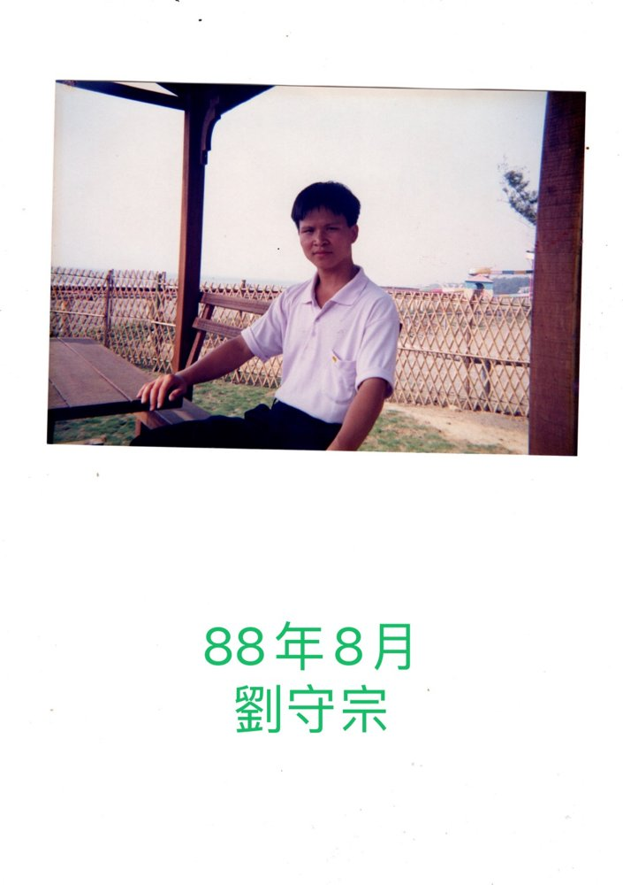
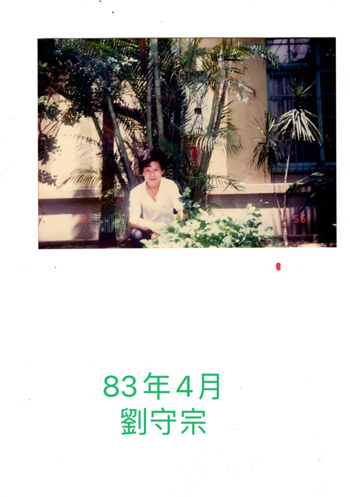
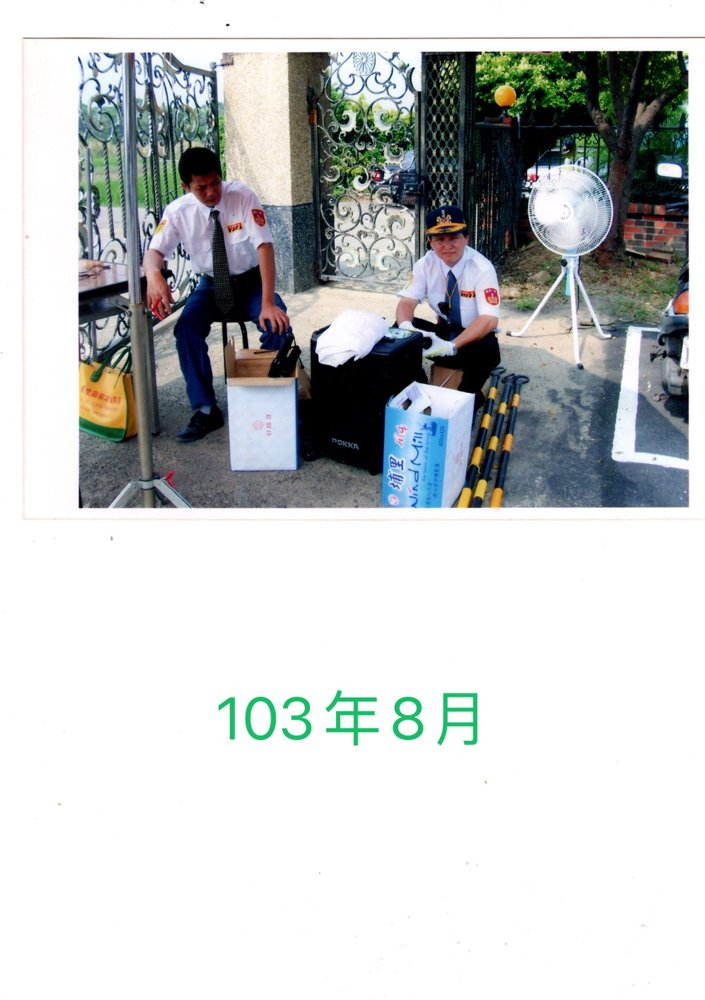
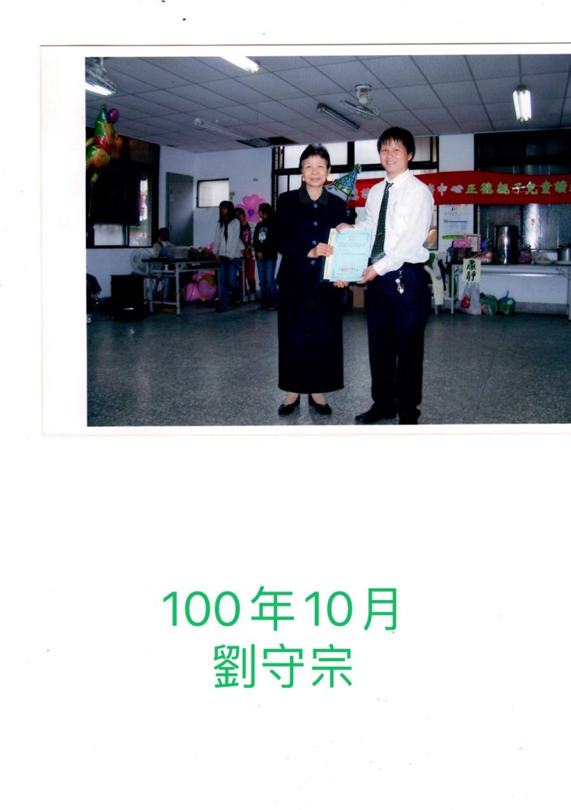

劉守宗修辦心得 事情就這一天開始發生了，後學堂哥有一次帶著我參加一個戶外活動，本來是引保師秀庭講師要渡化堂哥求道，結果是後學聽到問說，我可不可以去，引保師當然願意，天上掉下的禮物為何要，反而堂哥沒有這個機緣求道。引保師就安排適當的時間，約我去拜明師開智慧，那時候的我還沒當兵年輕的小夥子，當下跟每個人一樣萌萌懂懂就求了先天大道，也不了解道的殊勝，這就是所謂的根基深厚與佛有緣，是一個可愛善良人。這是我第一次踏進我們中華路正德佛堂，也是第一次見到李點師與及其他前賢，各個莊嚴肅穆服裝優雅，講完開示道義求了道說明三寶，可是內心還是無動於衷，沒有覺悟道之尊貴，之後就去屏東當兵，很幸運的抽到空軍一指部，這是一個後勤單位，聽說還蠻涼缺，裡面的長官比兵還多，也站了一個下士官長的缺，後學很幸運跟著是將軍退休下來的，聘僱人員一起工作，指揮官還要向他敬禮，所以也沒有遇到學長欺負學弟的不好事情，這就是有求有保佑。在平安當了兩年兵回來後，引保師也帶後學去奉天宮參加了兩天的法會，那時候還是仙佛借竅，才真正的感受到仙佛在我們身邊，濟公老師總是用各種方式，來提醒眾徙兒要趕緊來修道，老師批訓文當中，把我們現場參與法會班員的名字，都寫在文字裡面，讓後學驚訝不已，只有仙佛才做得到，也奠定了後學修辦道的信心，接著也進了新民班，加入了進修班課程，當然在道學上還有很多要學習的地方，離開學校這麼久一段時間，要坐在課堂上聽講，確實有一點折磨，當然引保師也是苦心的成全，課堂上也結識了一些同學，大家也一起互相扶持，歷經了五年班程結束後，準備進講師班，在這時候有一些同學會退縮，因為要上臺講課大家都害怕，但是那個人不是我，可是還是很緊張，也是因為這樣的歷練，讓後學成長了不少，對於在社會上遇到的困難都能迎刃而解，其實在參加進修班當中，後學就加入了交通組學習，也在一個因緣下，交通組開了一個會議，要選出一位組長，當時我沒有在場弟兄就把我推舉出去，就好像在一群人當中，大家都在觀望的時候，就不小心被推出去，後來接受到通知，平白無故當了交通組長到現在，所以奉勸各位前賢開會一定要到，不然就會跟後學一樣哈哈!以上是玩笑話，這是仙佛給你的神聖任務，你就要盡心盡力把它完成，這樣才不會愧對天恩師德；在這時候後學也成立了，一個小資又小的裝潢公司，也是拼創業的時候，我還是一樣聖凡併重，看了有的人，因為事業還有退道離開道場，真是感慨！他們，沒有堅持到最後。一定要堅信你付出多少，仙佛就回饋你多少，甚至更多。在於自己的專長能在道場了愿付出，是一個很法喜的事情，又能讓你在工作上順利。後學心裡真能感受到，在佛堂結緣，工作上遇到客戶大部都是好的，甚至成為好朋友。在佛堂學習聖賢經典，都是樂觀正能量，人生命運怎麼不會改變呢？
新竹區正在改變從中華路(正德)，搬到德成街(正德)，有了海埔(正德)，到現在崇慧佛院，都是一幕幕的回憶，想起卓姐燦爛的笑容，前賢們在這個地方不大的海埔正德，開法會、上課、辦活動，都是歡樂溫馨喜悅的，真是讓人回味。所謂舊的不去，新的就不會來，自古不變的道理，因為道務宏展，不得不再找更好的地方，所以落腳在新豐的中崙村，地方大了許多，交通組管的範圍也更大了，因此就有更多的發揮空間，後學就學習了氣球佈置，也讓佛院增添許多活潑色彩。正德是新竹區第一大壇，在這時候道場推動公壇翻倍，經過道場的薰陶人才倍出，就由謝生莉講師、朱學強講師、本人後學，3間家壇成立了毓德佛堂，後學想由兩位大德者接任義字班庇佑下，日子應該是很好過，過了一段時間兩位因病轉為幕後，就要我和謹柔講師接續義字班工作，當初在正德後學對謹柔講師第一次印象是這個陌生的新道親怎麼那~麼厲害，什麼都會做，想必能力一定很強，果然她就是上天最好的人才。毓德壇主講師盡心護持，把毓德帶領得有聲有色。接下來就是前兩年，因為疫情的緩和，所以我們進修班畢班的感恩與祝福的活動就恢復舉辦，後學就有個構想演一齣古裝戲劇，没想到前賢演員們，每個人骨頭裡面都藏著戲子，超乎我原有的想像，讓我感動的無法言語，兩次的演出，觀眾結果反應不錯，就成立了一個聖賢劇坊，這個戲劇也更緊密了，我們竹一區三個責任壇的團結共生。
結語:一生修道始終如一，沒有第二選項，認清一條金線，一次修一次成，願大家都能修成正果。